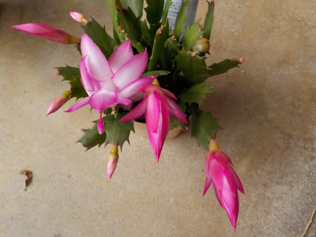
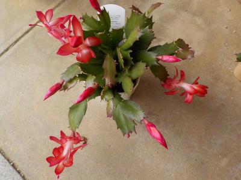
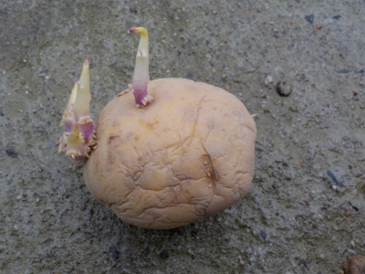
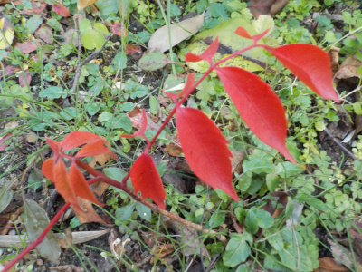
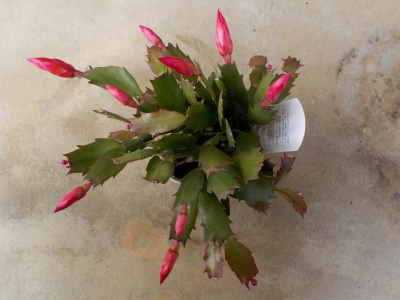

ジャコバサボテンが咲きました。
2018/12/24
思ってたより花が大きかったです。


派手でいいんですが、なんかバランスが悪い感じがします。
もっと株が大きくなるといいかもしれません。
2018/12/24
思ってたより花が大きかったです。


派手でいいんですが、なんかバランスが悪い感じがします。
もっと株が大きくなるといいかもしれません。
2018/12/24
じゃがいもの芽が大きくなっていました。

芽を取る作業をしました。
今年はいつもよりじゃがいもを多く食べてるようで、残りが少ない気がする。
2018/12/02
何の木かわからないですが、綺麗に赤くなっていました。

これが一面あったら見栄えがいいんだろうなーと思いますが、すぐに葉っぱを落としちゃうんだろうなー。
紅葉は出かけて見るのが一番いいかな。
2018/12/09
半額で買ったジャコバサボテンですが、すくすくと育ちました。

つぼみの状態でも色があるので綺麗ですね。
しばらく楽しめそうです。
過去の日記
畑仕事じゃないよ。